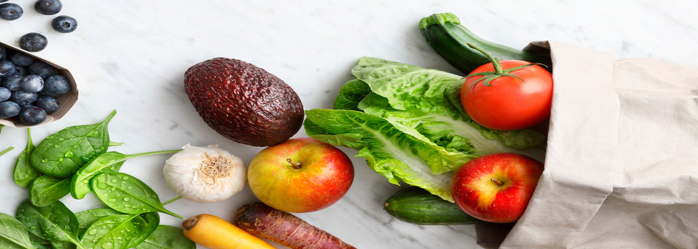
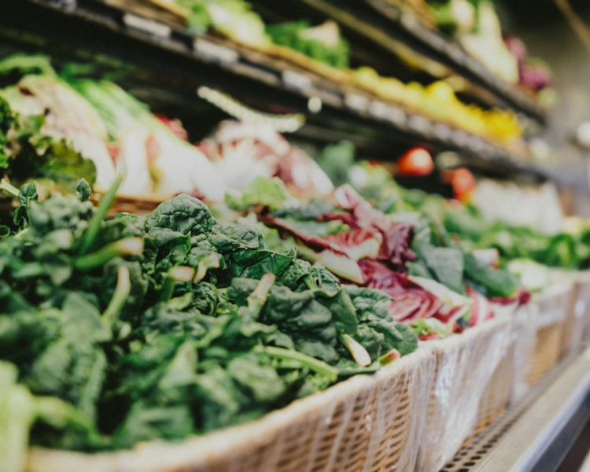

home > 사업소개 > GS THE FRESH
GS THE FRESH
GS 슈퍼마켓의 새로운 이름
신선한 행복을 주는 브랜드
GS THE FRESH
- 
-
- 신선, 맛, 서비스 대한민국 NO.1을 약속합니다.
- 전국의 우수 산지에서 가장 신선하고 맛있는 상품만을 선별해 매장에 입고시키며, 안전검사센터를 직접 운영해 상품의 안전성에도 만전을 기하고 있습니다.
- 또한 고객중심의 차별화된 서비스로 한국서비스품질지수(KS -SQI) 7년 연속 1위를 수상하는 등 고객을 위한 매장을 만들어 가고 있습니다.
-
- GS더프레시만의 차별화된 컨텐츠로 업계를 선도합니다.
- 상품성을 갖춘 우수중소업체의 상품을 발굴해 일반상품 가격의 7~80%수준 가격으로 판매하는 '리얼프라이스'와 우수산지에서 선도, 당도를 엄선한 신선식품 전용 브랜드 '신선특별시', 엄선된 재료로 최고의 맛을 지향하는 밀키트 '심플리쿡' 등 GS더프레시만의 우수한 PB상품과 오프라인 매장에서 접하기 힘든 상품을 합리적인 가격으로 제안하는 'GS더프레시 온라인 사전예약', 행사상품 할인/멤버십 추가 적립 혜택을 제공하는 'GS Pay' 등 차별화된 상품과 서비스로 국내 수퍼마켓 업계를 선도하고 있습니다.
가족과 함께하는 행복 쇼핑 산지의 신선함 그대로 가정으로 배달합니다.
-
- 신선
-
신선한 상품
철저한 검품
선도 NO.1
-
- 맛
-
맛있는 우수산지
맛있는 수확/숙성기준
맛있는 검사/판매기준
-
- 안전
-
안전검사센터 직접운영
안점먹거리 유통의 선두주자
화학 조미료 NO